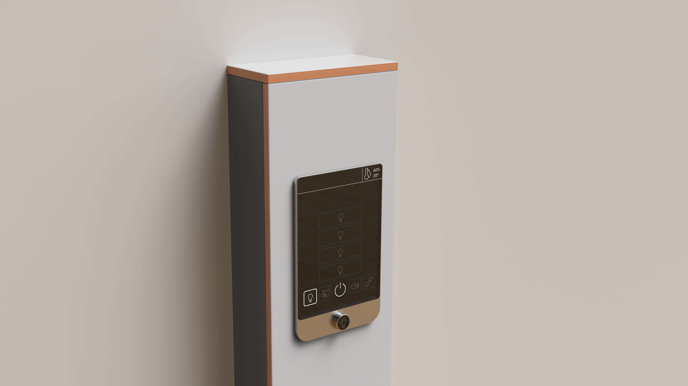

room controller redesign
raumsteuerung redesign
Redesigning room controls for university spaces
Neugestaltung der Raumsteuerung für Hochschulräume
project
projekt
- interface design
- Interface Design
- 4th semester
- 4. Semester
- one-week intensive seminar
- einwöchiges Blockseminar
role in the project
Rolle im Projekt
My focus was on the CAD model of the interface, renderings, and the UI layout. The course was structured as a compact design sprint and gave me an insight into interface and interaction design.
Meine Schwerpunkte lagen im CAD‑Modell des Interfaces, den Renderings und dem Layout des Userinterfaces. Der Kurs war wie ein kompakter Designsprint angelegt und gab mir einen Einblick in Interface‑ und Interaktionsdesign.
Context
Kontext
In a one-week intensive seminar, we reimagined the room controls at HfG Schwäbisch Gmünd. Our goal was to make lighting, heating, and other functions more accessible, clearer, and user-friendly.
In einem einwöchigen Blockseminar haben wir die Steuerung der Räume an der HfG Schwäbisch Gmünd neu gedacht. Unser Ziel war es, Licht, Heizung und weitere Funktionen zugänglicher, klarer und bedienungsfreundlicher zu machen.

User journey
We started by analysing the key functions from both "admin level" and "user level" perspectives. User journeys revealed pain points, such as system entry, unclear states, and the distribution of functions.
Zu Beginn analysierten wir die wichtigsten Funktionen aus Sicht von „Adminebene" und „Userebene". Über User-Journeys wurden Painpoints sichtbar, zum Beispiel der Einstieg in das System, unklare Zustände und die Verteilung von Funktionen.

Interface & interaction
Interface & Interaktion
The interface sits on an e-ink display. When entering the room, a touch wakes the display from standby: status bar and taskbar become visible, and the heating activates simultaneously.
Das Interface sitzt auf einem E‑Ink Display. Beim Betreten des Raums weckt eine Berührung das Display aus dem Standby: Statusleiste und Taskleiste werden sichtbar, gleichzeitig aktiviert sich die Heizung.
A taskbar provides access to sub-menus such as lighting or sound. A rotary dial serves as a consistent control element across all menus, for example for dimming lights or adjusting volume. A separate admin panel is used to configure lights and scenes.
Über eine Taskleiste gelangt man in Untermenüs wie Licht oder Ton. Ein Drehregler dient in allen Menüs als konsistentes Bedienelement, zum Beispiel zum Dimmen des Lichts oder Regeln der Lautstärke. Über ein separates Admin-Panel werden Leuchten und Szenen konfiguriert.